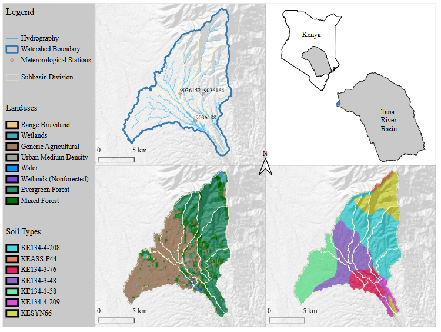
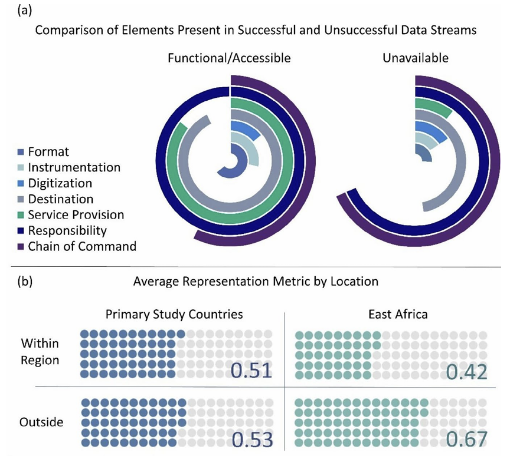

Ph.D. Research and Activities

I searched for a doctoral research topic on data-driven policy and was fortunate enough to find a great project focusing on East African water security with the Water Resources and Ecohydrologic Engineering group led by Dr. Gitau. I had the privilege of getting to work with great colleagues specializing in many aspects of the water-energy-food nexus and environmental sustainability both within the group and as part of my Lynn Fellowship-funded studies with the Ecological Sciences and Engineering interdisciplinary program at Purdue. An excellent feature of the project I worked on was the participation of academic and civil-society partners representing each of the three focal countries in my study; we regularly coordinated research efforts online, and I had the opportunity to visit Kenya to meet with colleagues, collect feedback from stakeholders, and conduct fieldwork in the Sasumua watershed. Near the conclusion of the project, I also had the chance to present our findings at a workshop we organized in Tanzania. It was through the course of this research that I sharpened my technical knowledge of statistical analysis, uncertainty quantification, data visualization, and ensemble data assimilation techniques. I became proficient in programming with R and was introduced to Python, and I gained experience working with GIS software such as ArcGIS and QGIS. I also developed a strong appreciation for the importance of stakeholder engagement in making relevant and useful research products.

Graduate Committee: Dr. Margaret W. Gitau (Chair), Dr. Bernard A. Engel, Dr. Darrell G. Schulze, Dr. David R. Johnson
Dissertation Title:Water Resources Management Solutions for East Africa: Increasing Availability and Utilization of Data for Decision-Making
Dissertation Abstract: The management of water resources in East Africa is inherently challenged by rainfall variability and the uneven spatial distribution of freshwater resources. In addition to these issues, meteorological and water data collection has been inconsistent over the past decades, and unclearly defined purposes or end goals for collected data have left many datasets ineffectively curated. In light of the data intensiveness of current modelling and planning methods, data scarcity and inaccessibility have become substantial impediments to informed decision-making. Among the outputs of this research are 1) a revised technique for evaluating bias correction performance on reanalysis data for use in regions where precipitation data is temporally discontinuous which can potentially be applied to other types of climate data as well, 2) a new methodology for quantifying qualitative information contained in legislation and official documents and websites for the assessment of relationships between documented meteorological and water data policies and resulting outcomes in terms of data availability and accessibility, and 3) a fresh look at data needs and the value data holds with respect to water resources decision-making and management in the region.
Link to Dissertation